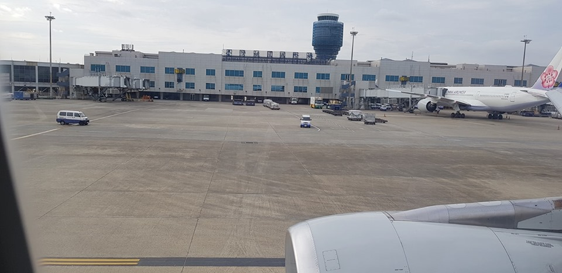

Ngày cuối ở Seattle tui liên tục nhận được điện thoại từ nhà má Tư và ông Hanh Tong, chủ yếu hỏi thăm tui đi đến đâu rồi, và chừng nào về đến phi trường Dallas, khi tui báo giờ dự kiến sẽ đáp xuống Dallas thì Hanh Tong và ông chồng của má Tư sẽ đến đón tại phi trường.

.Khoảng 16 giờ địa phương phi cơ chuẩn bị hạ cánh xuống, trên phi cơ tui thấy phi trường này thật rộng lớn, phi cơ lên xuống liên tục khiến mọi người đều nhận thấy đây là phi trường nhộn nhịp vô cùng, qua kiểm tra an ninh xong tui đi lấy hành lý rồi theo dòng người đi ra ngoài, thấp thoáng từ xa tui nhận thấy vợ chồng ông Hanh Tong ngồi chờ tự bao giờ, gần đấy là ông chồng má Tư và con gái Út tui cũng đứng chờ, thật vui mừng tui đến chào ông chồng má Tư rồi đến bắt tay ông Hanh Tong, tui thật cảm động vì mọi người đã bỏ công chờ đón tui tại phi trường mà còn tặng quà cho tui với thằng cháu ngoại nữa, đáp lại tui cũng gửi cho ông chút quà quê nhà gọi là lấy thảo, khi gom đủ hành lý chuẩn bị ra về thì Hanh Tong mời mọi người đi đến quán phở để dằn bụng, do đường về còn xa, hơn nữa ở Dallas cũng tương tự Sài gòn, đến giờ tan sở đường sá đông đúc hay gây kẹt xe nên ông chồng má Tư xin phép đưa tụi tui về cho kịp giờ, vì má Tư nôn nóng gặp con cháu bên nhà sang thăm nên má Tư đã nấu sẳn nồi canh chua với cá Hồi, thêm nồi cá kho cho đúng điệu bữa cơm của dân miền nam của mình.
Chia tay ông vợ chồng Hanh Tông trong lưu luyến, ông hẹn tui sẽ cố gắng gặp lại trong ngày quốc khánh Hoa Kỳ bốn tây tháng bảy.
Tui xin nói thêm về ông bạn Hanh Tong này, hai anh em tụi tui quen biết nhau qua trang nhà cựu học sinh Vĩnh Long Tống Phước Hiệp, thỉnh thoảng tui đăng truyện trên trang này, Hanh Tông nhào vô phụ họa rất vui, thắm thoát vậy mà quen nhau gần bảy năm ròng.
Hanh Tong là con cháu nhiều đời của ông Tống Phước Hiệp là vị quan với chức vị "Nội tả chưởng dinh" dưới thời chúa Nguyễn Phúc Khoát, ông là một người tận tụy với chức vụ, mưu lợi cho dân chúng, việc trị an được tốt đẹp khiến dân chúng rất yêu mến, các bạn thấy Hanh Tong cũng là hàng con nhà quan chứ chẳng chơi đâu nhé.
Phi trường Dallas cách thi trấn Melissa bốn mươi bốn dặm về hướng đông bắc, từ phi trường lái xe về Melissa khoảng bốn mươi chín phút, đây là khu thị trấn mới phát triển, đất đai còn rộng thênh thang, những khu dân cư mới xây mọc như nấm, những căn nhà nơi đây xây rất nhanh nhưng độ bền theo thời gian cũng không phải là ít, kỹ thuật và vật liệu xây dựng bên Mỹ rất hay, chủ yếu là lắp ráp nên tiết kiệm rất nhiều thời gian, tui thầm nghĩ, nếu ngành xây dựng của mình học cách làm kết cấu cho căn nhà như bên Mỹ thì tiết kiệm nhiều công sức và tiền của nhiều lắm.
Xe đậu lại trước nhà má Tư, căn nhà thật rộng gồm năm sáu phòng ngủ ( Tui chưa xem qua hết căn nhà, nên không biết chính xác) nhà rộng rãi mát mẻ có sân vườn chung quanh, nhất là phía sau nhà má Tư có mảnh đất rộng trồng đủ thứ rau quả tươi ngon.
Tụi tui xuống xe má Tư chạy ùa ra ôm hôn hai đứa nhỏ, rồi má Tư nói với tui:
- Ông Gò vấp đi có mệt lắm không?
Tui mỉm cười với cách gọi của má Tư đối với tui như vậy, vì thân thương lắm nên má Tư đặt cho tui biệt danh "ông Gò Vấp", tui khẻ gật đầu rồi chào hết cả nhà, chiều hôm đó tui và hai cháu được ăn một bữa cơm ngon nhất trong đời, thấy tụi tui ăn hết ráo thức ăn khiến má Tư vui ra mặt, vì bên Mỹ khi dọn ra cho khách ăn mà khách còn chừa thức ăn lại trong dĩa thì coi như họ đã gián tiếp chê thức ăn không được ngon.
Qua hôm sau tụi tui đi lòng vòng quanh các con đường trước nhà má Tư chơi, cây cỏ trồng trước mỗi nhà thật đẹp, tiếc thay cho thành phố Sài gòn, trước đây do người Pháp họ quy hoạch đường phố và các loại kiến trúc như bên mẫu quốc nên đường sá hơi chật hẹp, nếu có tầm nhìn rộng hơn họ làm đường và vỉa hè rộng như bên Mỹ này thì cũng hạn chế nạn kẹt xe như hiện nay vấp phải.
Không khí ở Melissa rất trong lành, mùa hè nơi đây cũng nóng nhưng không nóng quá như Sài gòn, cũng chưa khi nào nắng rát mặt như mùa hè Las Vegas, đặc biệt ở đây an ninh trật tự hầu như tuyệt đối, cháu Kevin con của má Tư cắm chìa khóa của chiếc xe mô tô hiệu Suzuki 3500cc để hẳn ngoài sân rồi bỏ thí ở đó để vô nhà nghỉ ngơi, tui thấy vậy (chắc tại bệnh nghề nghiệp) nên tui nói:
- Sao không khóa cổ xe rồi đem chìa khóa vô nhà.
Cháu cười và giải thích ở đây không ai làm chuyện ăn cắp hết, bằng chứng là ga ra chứa xe hơi và nhiều dụng cụ sửa xe mở cửa để cả ngày chẳng ai trông coi mà chẳng mất bất cứ vật gì bao giờ, gặp Sài gòn là nhà không còn một món như chơi, vì vậy khi đến xứ sở văn minh mình phải theo lối sống của họ, đừng vì lòng tham nhám nhúa tay chân thì khác nào tự bôi tro trát trấu vào mình đó các bạn.
Tui có một người cô ruột cô thứ mười, ba tui thứ chín, ngày xưa cứ chiều thứ bảy hoặc sáng chủ nhật cô dượng Mười hay lái xe từ Phú nhận vô nhà ba tui chơi, riết rồi cứ thấy chiếc xe "Trắc xông" màu đen có bảng số NBQ - 386 là tụi tui ùa ra mừng rỡ, cô dượng Mười hay chở tụi tui đi ra "Cấp" (Vũng tàu) để tắm biển, bên nội tui có cô dượng là gần gủi hơn những người khác nhiều.
Sau bảy lăm cô dượng Mười của tui sang định cư tại Arlington sống tại đây từ đó đến nay, khi nghe tui ở Melissa, em Đào con của cô Mười kêu cháu Liên là con của Đào lái xe gần cả giờ đồng hồ rước tui về Arlington để cô gặp mặt, thế là tui có mặt tại nhà cô tui đúng dịp lễ độc lập của đất nước Hoa kỳ, một ngày lễ thật thiêng liêng dành cho đất nước và sum họp gia đình, gặp cô Mười và các chị em tui mừng mừng tủi tủi, những kỷ niệm ngày xưa ùa về, cô Mười nhắc lại những kỷ niệm thân thương khiến tui ứa nước mắt, ba tui đã về nơi miên viễn khá lâu, chắc nơi đó ông mà biết được hai cô cháu có ngày gặp nhau trên đất khách chắc ông vui mừng không kém như tui.
Ăn uống xong tui định nghỉ ngơi chút xíu cho lại sức, bổng đâu chuông điện thoại réo liên hồi, mở máy ra tui nhìn thấy Ngọc một cô em cũng là tay văn thơ có cỡ trong trang nhà Rạch giá Tha hương, Ngọc và tui cũng thường comment vui cho những bài viết của nhau, Ngọc cũng đã giúp tui một số việc ngoài đời tuy chưa từng gặp mặt, tui lấy làm lạ và tự hỏi:
- Ủa sao tự nhiên Ngọc gọi vậy cà
Tui trả lời:
- Anh Hùng nè, gọi anh có gì không Ngọc ơi.
Biết tui ở Việt Nam, nhưng cô nàng thấy tui ghi dưới cuối truyện ngắn:(Bà Sáu bỏ cuộc chơi) Hàng chữ Texas ngày... Cô nàng lấy làm lạ và nghi tui đang có mặt tại Texas nên Ngọc gọi điện thoại hỏi thăm, hóa ra cô nàng cũng đang ở thành phố Arlington chung với nơi Cô tui đang sinh sống, vậy là Ngọc lái xe đến "bắt cóc" tui chở đi lòng vòng thành phố để chụp ảnh, Ngọc giới thiệu các danh lam thắng cảnh nơi đây, nơi có những trận thi đấu thể thao môn dả cầu thật hấp dẫn. Chiều đến Ngọc rủ thêm con gái đến một nhà hàng ăn của người Mễ đãi ông anh phương xa và gặp nhau bất tử những món ăn thật ngon, tui cũng mừng vì mình là người ăn ở có trước có sau nên đi đâu cũng có quới nhân giúp đỡ, nhân đây tui xin cảm ơn cô em này đã có tấm lòng thật tốt với tui, nguyện cầu ơn trên phù hộ cho Ngọc và gia đình được nhiều may mắn và an lành trong cuộc sống.
Ngọc lái xe đưa tui trở lại nhà cô của tui, chia tay Ngọc khi bên ngoài trời đang dần nhá nhem tối, tôi thật cảm động với nghĩa cữ này của cô em lần đầu gặp mặt giữa đời thường này.
Bấm chuông gọi cửa, Đào em tui ra mở cửa, sau khi hỏi han việc đi chơi chiều nay, Cô tui hối Đào và chị Hương ( Con của cô Sáu tui đến thăm dì của mình, chị từ thành phố Houston đến) dọn món ăn mừng lễ độc lập và cũng để mừng cô cháu anh em tụi tui gặp lại sau mấy chục năm dài, Đào và chị Hương đang loay hoay công việc, bổng chuông điện thoại tui nó lại réo lên, cô tui thấy vậy liền nói:
- Chèn ơi qua tới Mỹ xa lắc xa lơ mà bạn bè đâu quá chừng vậy?
Tui cười với cô và nghe máy, bên kia đầu dây là anh chàng "Tống công tử" mà hàng ngày tui hay ghẹo anh chàng Hanh Tong với cái biệt danh này ( Hanh Tong còn biệt danh khác là thầy Cai tổng, nghe đâu thầy còn thiếu bà Hội đồng Ngọc Nhan ba giạ lúa mượn thời xa xưa, nay nghe tui đi Mỹ bà Hội đồng có nhờ gặp thầy Cai tổng đòi ba giạ lúa cho bà, tui nhắn cho thầy Cai tổng vụ việc trên, thẩy nó: Ông Hùng về nói bà Hội đồng qua Mỹ đi ổng sẽ trả đủ vốn lẫn lãi, nghe vậy coi như tui trớt quớt vì bà Hội đồng có bỏ nhỏ cho tui rằng: ông Hùng cứ đòi đi nếu được thì ông hưởng một giạ lúa), Hanh Tong gọi tui để hỏi địa chỉ rồi rước tui đến nhà cùng vui tết độc lập, nghe vậy một thoáng suy nghĩ tui nói với Tống công tử:
- Thôi ghé lại đây chơi với tui đi ông ơi, tui tới thăm cô mà bỏ đi hoài sợ cô buồn.
Sau khi Đào cho địa chỉ nơi tui đang ở, chừng mươi phút sau Tống công tử có mặt tại nhà
Sau một hồi trò chuyện Tống công tử xin kiếu từ, tui tiển anh ta ra về với lòng thân mến vô cùng, hẹn Tống đệ ngày nào đó gặp nhau ở Sài gòn nhé.
Cổ bàn đã dọn ra, món heo rừng xào lăn do Đào nấu thật ngon, hải sản nướng cuốn bánh tráng chấm mắm nêm, trên đất Mỹ mà thưởng thức món này làm tui tưởng mình đang ở quê nhà, để cho ngon miệng tui cùng chị Hương uống hai ly rượu chát nhỏ vậy mà nó cũng lâng lâng.
Thương cô Mười tui lắm ngày xưa còn son trẻ cô đẹp rất tự nhiên, nay chín mươi bốn tuổi mà nét mệnh phụ phu nhân ngày xưa vẫn còn hiện diện nơi cô, tuy tuổi cao nhưng cô còn minh mẫn kể chuyện ngày xưa nhớ vanh vách.
Chia tay người cô khả kính tui trở lại Melissa, trước khi ra về cô Mười gửi chút quà cho má tui, chị Hương cũng có cái bao lì xì màu đỏ cho mợ Chín (má tui), Đào cũng gom góp quà gửi cho mấy chị em tui bên nhà, tui cảm động vô cùng vì cái tình bà con sao ấm áp vô cùng.
Về lại Melissa tui và cháu Liên (cô tài xế dễ thương ) quên việc chụp ảnh hai cậu cháu để lưu niệm, hẹn con dịp khác nhé Liên ơi.
Quay lại nhà má Tư chừng hai hôm là đến ngày phải trở lại quê nhà, trước khi về lại Sài gòn, nhà máTư chở tía con tui ra thành phố Denton vô xem nơi nuôi các con thú, cảnh trí và cách nuôi nhốt thật gần gủi với con người, nào là cá sấu bạch tạng, chim cánh cụt, những loại chim chóc quý hiếm, cá biển, cá mập, cá đuối bơi lượn trong thủy cung rất đẹp, còn nhiều loại thú khác và cây cỏ được trồng rất hài hòa, tui có cảm giác lạc vào khu rừng nào đó có suối róc rách chảy luồn qua hang động mát rượi.
Buổi chiều má Tư lại cho cả nhà ăn một buổi tối thịnh soạn tại một nhà hàng Mễ rất ngon, ăn xong tui cảm thấy mình phát phì ra và nghĩ rằng chuyến này về lại bên nhà tui phải "Tề bớt cái cửa" mới chui lọt vô nhà.
Đêm cuối ở nhà má Tư, bao nhiêu buồn vui trong đời hai bên cùng trút sạch, tui chìm vào giấc ngủ khi đồng hồ chỉ hai giờ sáng.
Sài gòn 19.7.2019 (7:44)
* Đến đây còn một tập cuối cùng, xin mời các bạn đón xem với tựa đề: Gian nan trên đường trở lại Sài Gòn.